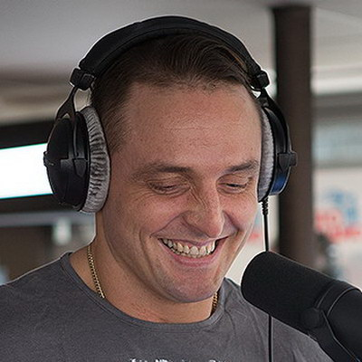
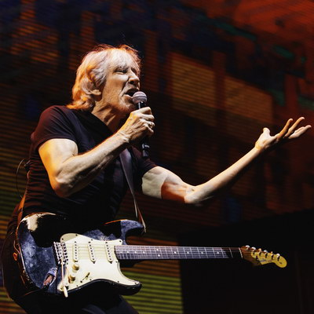

Умер актёр из «Терминатора» и племянник Джона Кеннеди Кристофер Лоуфорд
Актёр и племянник Джона Кеннеди Кристофер Лоуфорд скончался в возрасте 63 лет. Об этом сообщила в твиттере его двоюродная сестра Керри Кеннеди...
подробнее »Пенелопа Крус и Гаэль Гарсия Берналь сыграют в фильме про кубинских шпионов в США
Пенелопа Крус, Гаэль Гарсия Берналь и Вагнер Моура («Нарко») присоединились к касту фильма «Осиная сеть» («Wasp Network»), сообщает Deadline...
подробнее »
Крис Мартин и Дакота Джонсон сделали одинаковые татуировки
Солист группы Coldplay Крис Мартин и звезда «50 оттенков серого» Дакота Джонсон дали новый повод обсудить их отношения: пара сделала одинаковые татуировки...
подробнее »